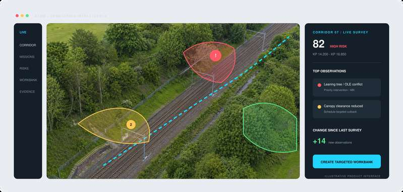
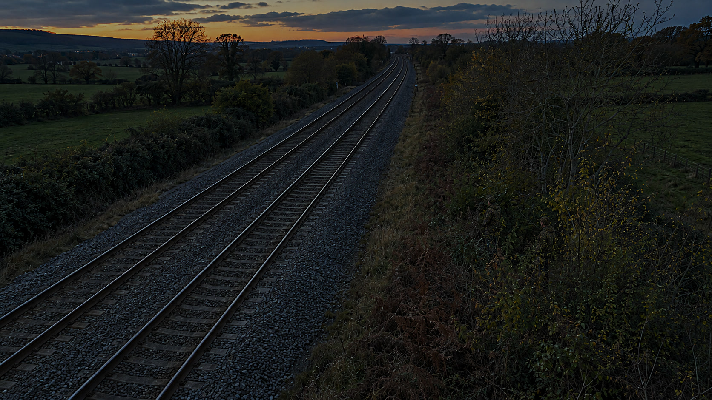
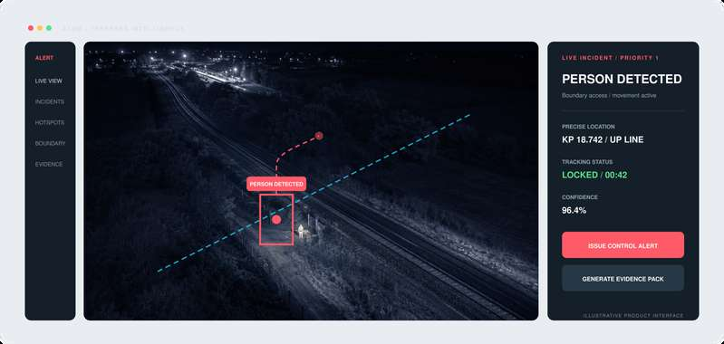

Aircraft & payload integration
Configure the aircraft, sensing and data-transfer architecture around the inspection task and the information your teams need.
Aerial Intelligence
Visual and thermal drone inspection, combining advanced UAV technology with custom-built intelligent software. From overhead line, wind turbine and electricity pylon inspections to vegetation management and land management plans, Apexiar provides the evidence to assess condition and plan the work ahead.

From aircraft to actionable evidence
Apexiar brings aircraft and payload integration, inspection services and software architecture together around your operation.
Configure the aircraft, sensing and data-transfer architecture around the inspection task and the information your teams need.
Turnkey inspection programmes, rapid-response and emergency call-off capability for infrastructure and incident-response requirements.
Integrate client aircraft and their data with Apexiar intelligence applications, bringing aerial evidence into the wider operational picture.
Applications / Rail and infrastructure
Turn repeat aerial surveys into a measured, prioritised and verifiable vegetation workbank.
Inspect and monitor railway infrastructure and surrounding land, including track, structures, earthworks, embankment slips, drainage, vegetation and overhead line equipment.

Visual evidence to support inspection of overhead line equipment, masts and associated infrastructure.
Aerial inspection supporting clearance assessment and asset condition monitoring across critical infrastructure.
Remote reconnaissance to support an understanding of affected assets and surrounding land.

Thermal and visual evidence
The operational Gen 1 platform brings visual and thermal sensing together for remote inspection and incident-response programmes.
Shape the inspection around the asset or incident, then connect the resulting evidence with the information your teams use to investigate and respond.
Discuss thermal inspection →Combine visible and thermal imagery to support railway security and situational awareness.
Drag to reveal the thermal view. Or focus the comparison and use the arrow keys.

Visible image shown. Comparison available when both images have loaded.
Security intelligence / Concept
A live-intelligence concept for trespass hotspots, boundary vulnerabilities and rapid control-room awareness.
This concept explores how aerial observation and location-linked evidence could support security teams around the rail corridor.
Discuss a security use case →
Platform and development
Gen 1 / Operational configuration
The DJI Matrice 400 and Zenmuse H30T multi-sensor payload combine with Apexiar-integrated sensing and secure data-transfer architecture to support high-resolution visual, thermal and remote infrastructure inspection.
Gen 2 / Engineering development
Development is progressing across payload integration, onboard processing, communications and sensing for specific operational needs. Gen 2 is in engineering development.
Long-term direction: design, development and manufacture of Apexiar UAV systems in South Wales, shaped for rail, national infrastructure and emergency response.
Part of the wider operational picture
Bring aerial evidence into the conversation alongside asset telemetry, engineering information and operational workflows.
Start with the requirement
Tell us about the assets, location and inspection or response challenge. We will work with you to define the aircraft, sensing and data requirements.